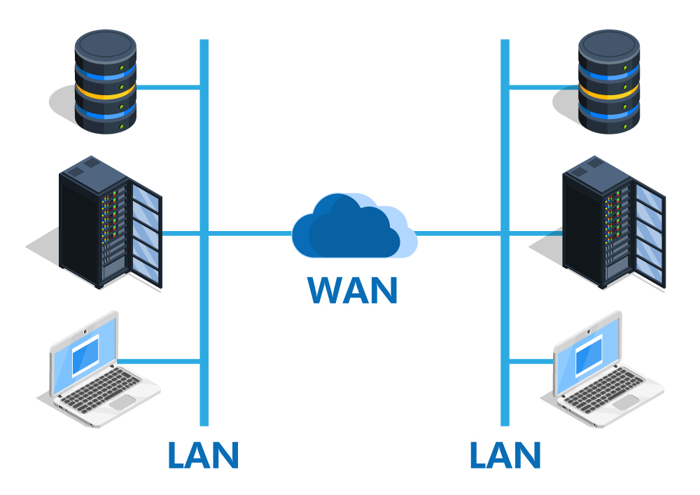

A computer network is a system of interconnected computers and devices that communicate with each other to share resources,data and application.These devices are linked using wired or wireless technologies,such as ethernet cables or wifi.Networks can vary in size in complexities,ranging from small local area networks (LANs) in homes or offices to vast wide area networks (WANs) that connect computers across cities or countries.

fig1-LAN and WAN
Computer Networks enable efficient commiunication and collaboration, allowing users to access shared files,printers and internets connections.They also play a vital role in business operations,online services and data management.With rise of the internet,networks have become essential for everyday activites,including browsing the web,sending emails, and particapting in video conferences.